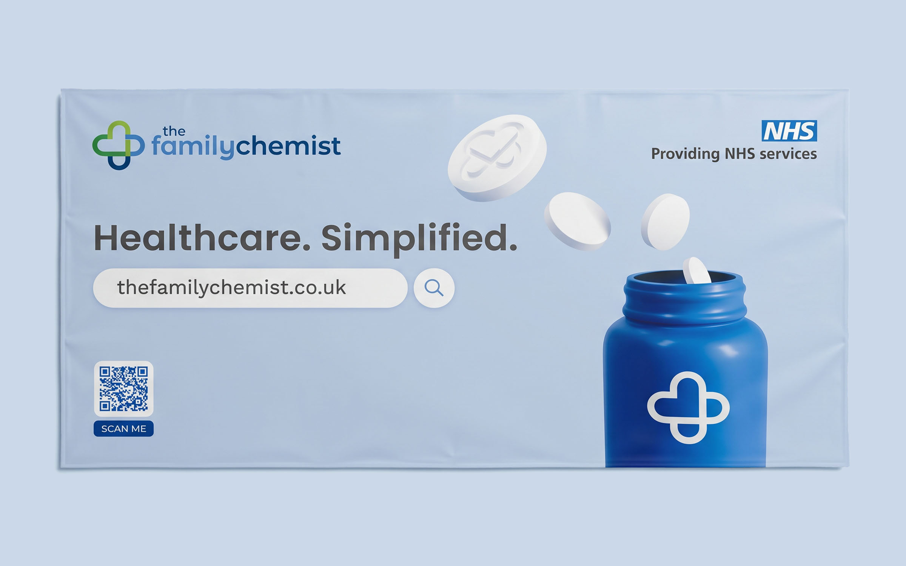
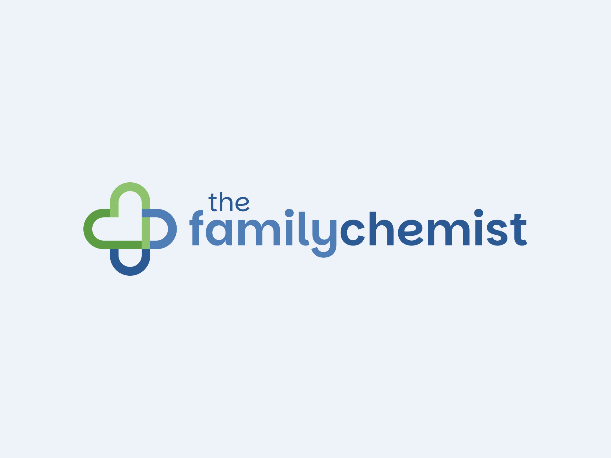
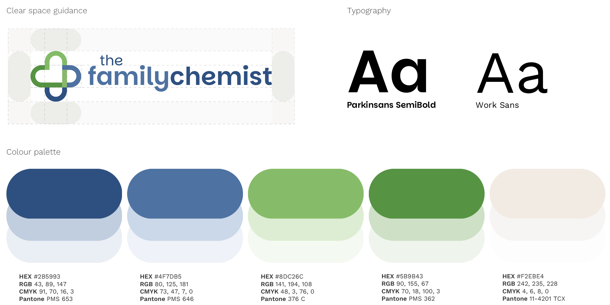
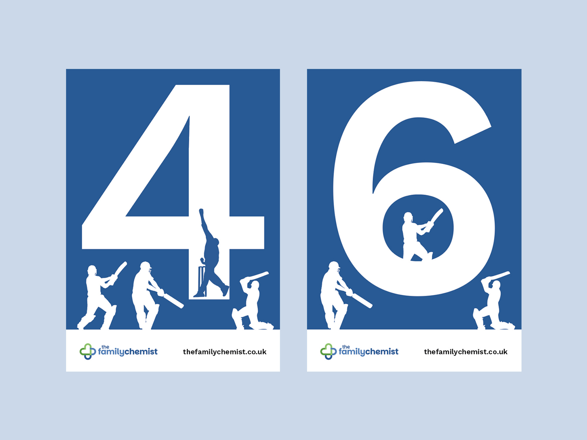
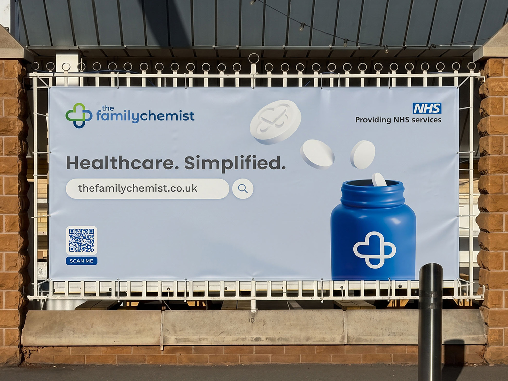
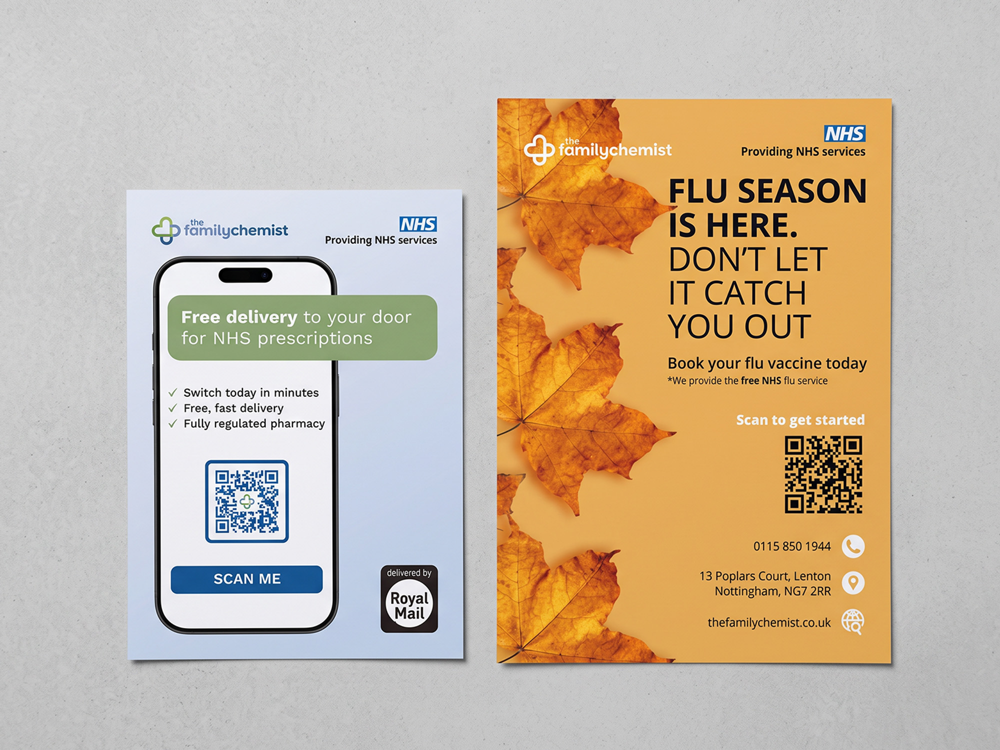
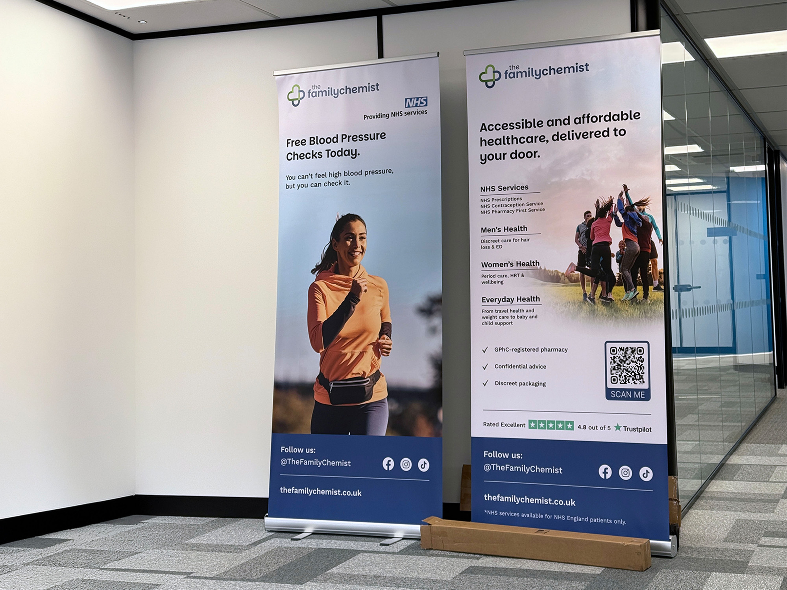
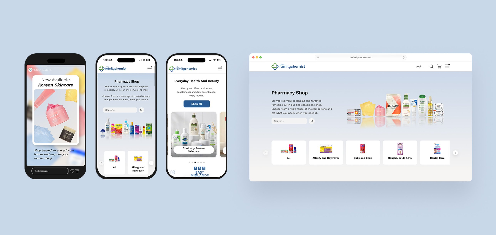
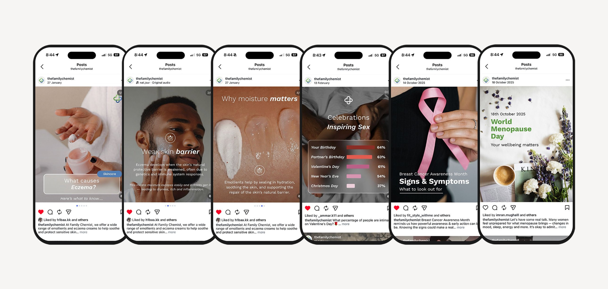

Project type

As in-house designer at The Family Chemist, an online pharmacy, I helped refresh the brand to bring consistency to a growing business across digital, print and sponsorship advertising.
The brand needed a more modern, legible identity without losing what customers already recognised. It also had to work across a growing range of services and channels, from NHS materials and private treatments to a new Pharmacy Shop with its own retail feel.
Working with the marketing team and stakeholders, we modernised the logo and refreshed the brand guidelines. These became the foundation for campaigns and everyday design, keeping the brand recognisable while letting each channel suit its audience, from clear, accessible NHS leaflets to bold sponsorship assets.
The brand now feels more consistent and recognisable across the website, email, social, print and outdoor. Working on web pages, seasonal campaigns and print-ready artwork with suppliers deepened my understanding of production, specifications and designing for a real business.




Cricket scorecards and a fence banner at Trent Bridge, designed to read from a distance.


Leaflets for NHS prescriptions and the flu vaccine, and roller banners for in-person health services.

The Pharmacy Shop launch across Instagram, mobile and desktop.

Instagram posts for health awareness days and product education.
Next project
UX/UI Design, Branding